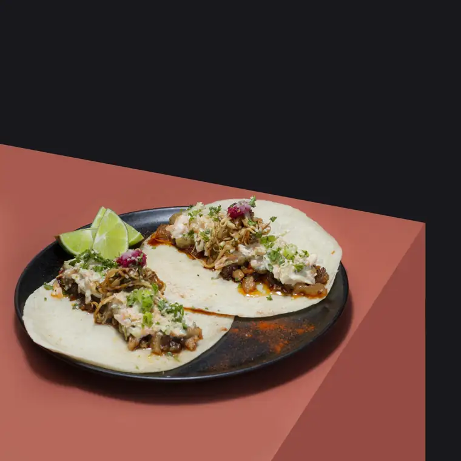
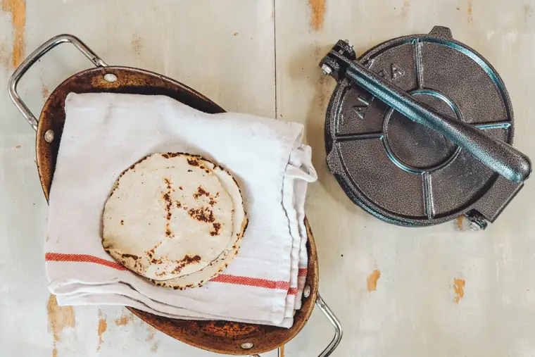
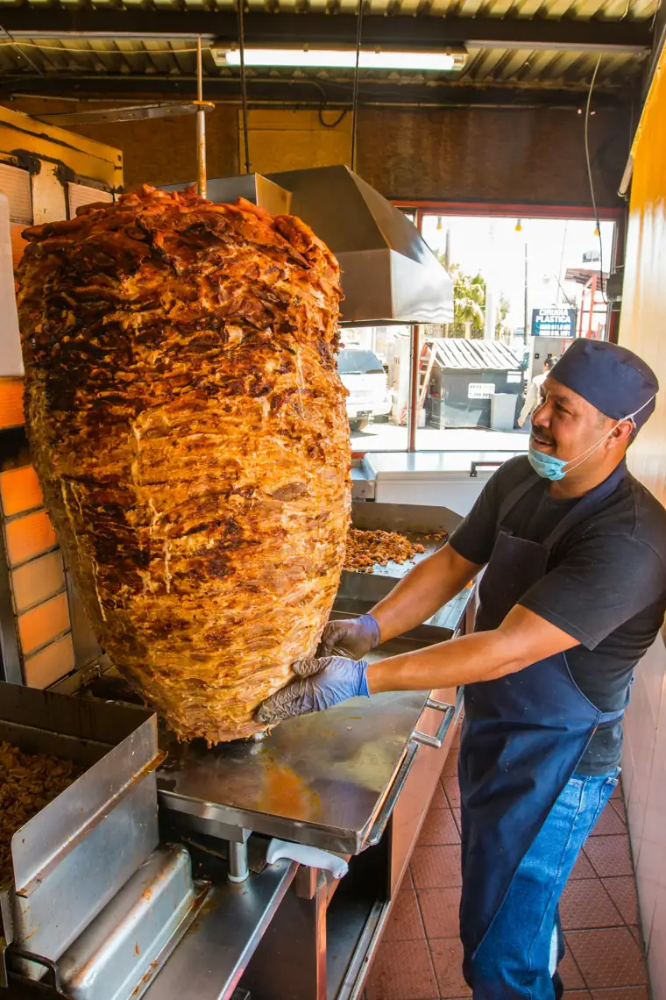
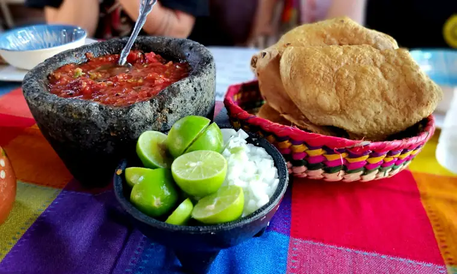
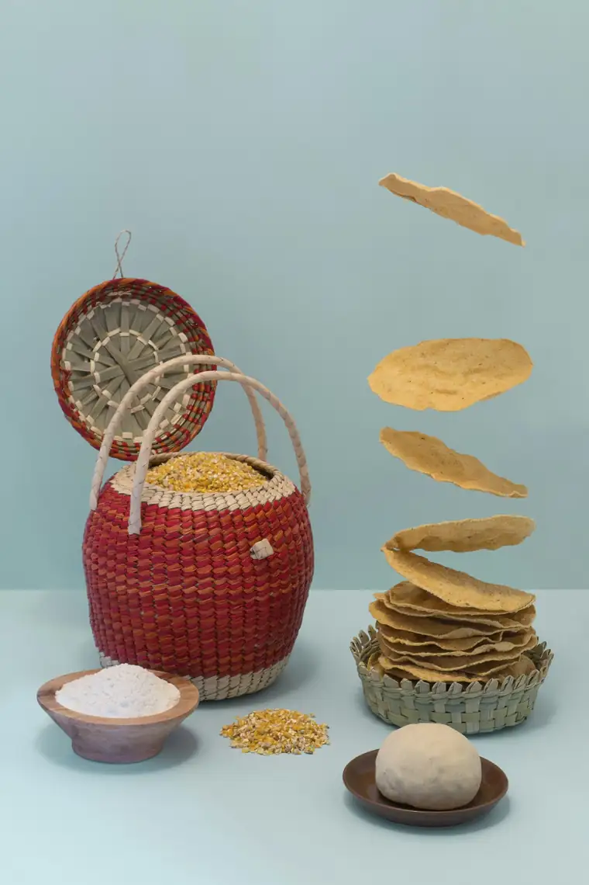

Al pastor
Adobo pork off the trompo, roasted pineapple, onion, cilantro
$4.75
Taquería · Seminole Heights · Tampa
Purple corn tortillas pressed to order, al pastor off the trompo and salsas ground in stone. Under the papel picado on North Florida Avenue.
Hola, neighbor
Our purple corn comes from a growers' cooperative in Oaxaca. We cook it with lime every night, grind it on stone at dawn and press each tortilla when you order. It tastes like real corn, because it is.
The pastor turns on the trompo from 11. Salsas are ground in a molcajete twice a day. The aguas frescas change with whatever fruit the market has.



The masa
Heirloom purple corn from the Mixteca, bought straight from the cooperative. Every sack says who grew it.

We cook it with lime and water and let it rest overnight. That loosens the skins and wakes up the flavor.
Ground on volcanic stone before we open. The masa keeps some grit, nothing like flour.
Each ball is pressed when you order. Thirty seconds a side, it puffs, and onto your plate.
Tuesday
Al pastor tacos at $3 all night, from 5 PM.
Friday
Margaritas and palomas at $7, 3 to 6 PM, on the patio.
Sunday
We open at 10 with birria, consomé and café de olla.
Photos
What the neighbors say
“The purple tortilla changed how I think about a taco. The pastor has that perfect crisp edge. I come every Tuesday.”
“Sunday birria and café de olla on the patio. There is no better way to start the week.”
“Ordered pickup on my phone and it was ready before I parked. The mushroom tacos are for everyone, not just vegetarians.”
“They catered our wedding: 140 guests, trompo included. People still ask us about the taquero.”
Visit
Open today
| Tuesday – Thursday | 11 AM – 9 PM |
|---|---|
| Friday & Saturday | 11 AM – 11 PM |
| Sunday | 10 AM – 4 PM |
| Monday | Closed, making masa |
Nothing here yet. Tap + on anything in the menu.